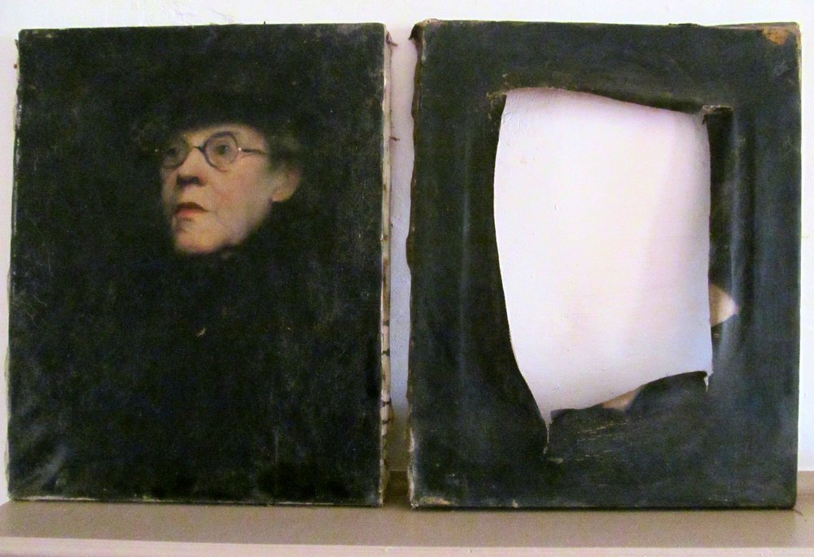

Sunday, January the 4th, 2015
back to: title, date or indexes
In her letter yesterday, Poppy Nisbet mentioned the decoration of the “Zeitgeist” Death Room, consisting in part of portrait paintings (by Marjorie Monroe) “of subjects who all looked like characters from Agatha Christie” from which “the faces [were] cut out and the rest of the image left intact”. Ms Nisbet has now provided photographic evidence of what she is talking about, so you lot can better appreciate the spookiness.
Left : intact portrait, Right : wrecked portrait.
